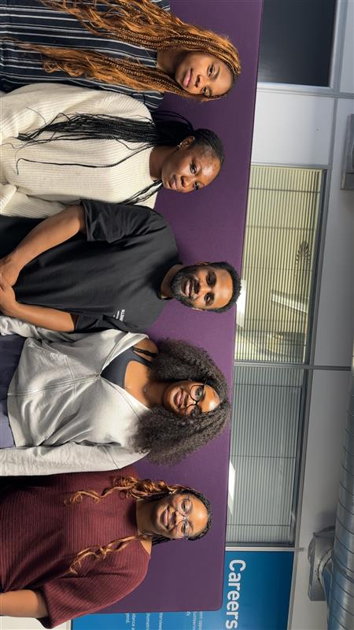

Recycling Reimagined
Welcome to Smart Greens — a modern, digital recycling solution that rewards you for making eco-conscious choices every day.
Join the MovementWhat is Smart Greens?
Smart Greens is a user-friendly recycling system that lets you log in, deposit recyclable items into smart bins, and earn reward points. It’s designed for homes, schools, and community spaces to boost recycling habits in an engaging way.
How It Works
- Sign up or log in to your account.
- Scan your unique QR code or use your PIN at the Smart Bin station.
- Deposit eligible recyclables and earn points automatically.
- Track your progress and redeem eco-friendly rewards.
Meet the Team
We’re a passionate group of creators, developers, and environmentalists working together to reshape how recycling fits into daily life. Our mission is to make sustainability second nature for everyone.